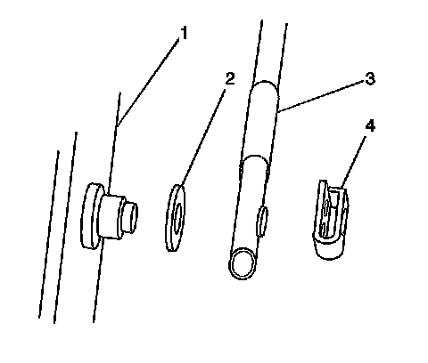
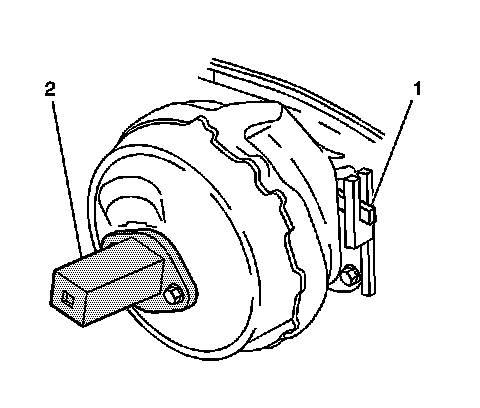
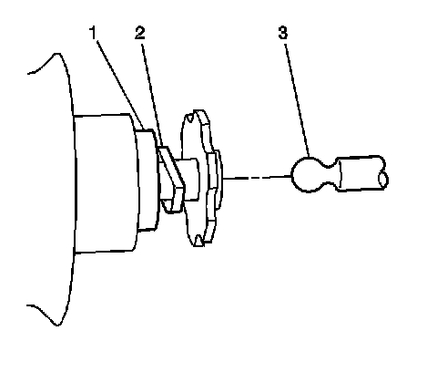
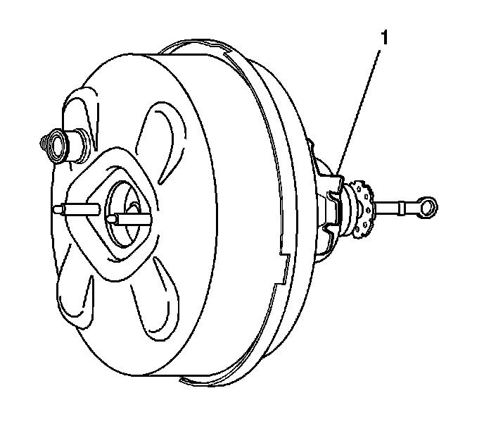

Power Vacuum Brake Booster Replacement (LHD)
Power Vacuum Brake Booster Replacement (LHD)
Tools Required
J 22805-B Brake Booster Holder
Removal Procedure

1. Remove the left side instrument panel insulator panel. Refer to Instrument Panel Insulator Panel Replacement - Left Side (Left Hand Drive) (Service and Repair)Instrument Panel Insulator Panel Replacement - Left Side (Right Hand Drive) (Service and Repair) .
2. Remove the vacuum brake booster push rod retaining clip (4).
3. Remove the vacuum brake booster pushrod (3) from the brake pedal.
4. If equipped with a cross vehicle brace, remove the cross vehicle brace. Refer to Cross Vehicle Brace Replacement (Cross Vehicle Brace Replacement) .
Important: It is not necessary to disconnect the brake pipes from the master cylinder.
5. Remove the master cylinder from the vacuum brake booster and position the master cylinder aside. Refer to Master Cylinder Replacement (Master Cylinder Replacement) .
6. Remove the air inlet grille panel, to access the vacuum brake booster locking tab. Refer to Air Inlet Grille Panel Replacement (Service and Repair) .
7. Disconnect the vacuum brake booster check valve and vacuum hose assembly from the vacuum brake booster and position aside.
8. Without disconnecting the the surge tank hoses, remove the surge tank nut and bolt and position the surge tank aside. Refer to Radiator Surge Tank Replacement (Left Hand Drive) (Service and Repair)Radiator Surge Tank Replacement (Right Hand Drive) (Service and Repair) .
9. Install the J 22805-B to the vacuum brake booster using the master cylinder mounting nuts.

10. Using a flat bladed tool to depress the vacuum brake booster locking tab (1), turn the vacuum brake booster counter clockwise with a ratchet on theJ 22805-B (2).
11. Carefully remove the vacuum brake booster from the cowl mounting flange.
12. Support the vacuum brake booster.

13. Carefully push the vacuum brake booster foam filter (1) in enough to access the vacuum brake booster retaining clip (2).
14. Carefully lift the longer leg of the retaining clip (2) upward.
15. Carefully remove the pushrod (3) from the vacuum brake booster.
Installation Procedure
Notice: Internal components of this booster are not serviceable. The housing must not be unstaked and separated. Separating the housing will cause permanent deformation, preventing the booster from holding proper volume.
Notice: Inspect the locking flanges on booster and mounting plate. Replace the booster and mounting plate if the locking flanges are bent or damaged.
Important: If reinstalling the old vacuum brake booster ensure the locking tab on the brake booster assembly is straight. This will ensure the locking tab will lock into position when installed.

1. Straighten the vacuum brake booster locking tab (1) if previously removed.
2. Install the vacuum brake booster push rod through the dust boot on the cowl.
3. Carefully install the vacuum brake booster to the vacuum brake booster pushrod (3).
Important: Ensure that the long leg of the retainer clip is in the machined groove of the pushrod (3).
4. Carefully push the vacuum brake booster on to the pushrod until the long leg of the retaining clip seats into the machined groove of the pushrod.
5. Position the vacuum brake booster on the cowl counter clockwise from the final installation position so that the locking flanges on the vacuum brake booster and on the cowl mounting flange engage.
Important: Ensure the locking tab and the flanges are in the fully engaged position.
6. Rotate the vacuum brake booster clockwise with a ratchet on the J 22805-B (2). DO NOT use a flat bladed tool in the locking tab to install the vacuum brake booster.
When the vacuum brake booster is correctly installed, the locking tab (1) slides up the flange and engages the locking notch.
7. Remove the J 22805-B from the vacuum brake booster.
8. Position and install the vacuum hose and check valve assembly to the booster.
9. Position the surge tank and install the surge tank nut and bolt. Refer to Radiator Surge Tank Replacement (Left Hand Drive) (Service and Repair)Radiator Surge Tank Replacement (Right Hand Drive) (Service and Repair) .
10. Install the air inlet grille panel. Refer to Air Inlet Grille Panel Replacement (Service and Repair) .
11. Install the master cylinder to the vacuum brake booster. Refer to Master Cylinder Replacement (Master Cylinder Replacement) .
12. If equipped with a cross vehicle brace, install the cross vehicle brace. Refer to Cross Vehicle Brace Replacement (Cross Vehicle Brace Replacement) .
13. Install the vacuum brake booster pushrod (3) to the brake pedal.
14. Install the vacuum brake booster push rod retaining clip (4) to the brake pedal.
15. Install the left closeout/insulator panel. Refer to Instrument Panel Insulator Panel Replacement - Left Side (Left Hand Drive) (Service and Repair)Instrument Panel Insulator Panel Replacement - Left Side (Right Hand Drive) (Service and Repair) .